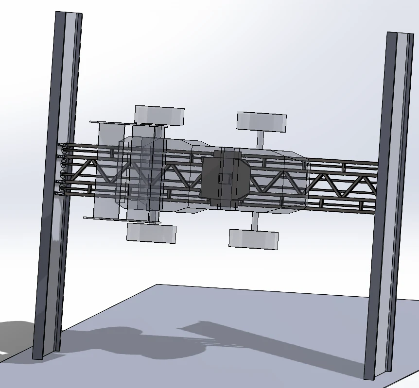

From concept to validated design.
I am a fifth-year mechanical engineering student in a France–Colombia double-degree programme, specialising in Industrial Energy Engineering. My work connects mechanical design, finite-element analysis, product development and programming.

with quadratic triangles at 0.9 mm mesh size
Projects & case studies
Engineering decisions backed by modelling, analysis, practical constraints and documented results.
PROJECT / 01FEA Mesh Convergence Study
Mesh refinement on a compact tension specimen: comparing linear and quadratic triangular elements and evaluating the reliability of displacement and stress outputs.

PROJECT / 02Wall-Mounted Race Car Display Fixture
Clamping system and frame design for supporting a Formula Student vehicle without drilling structural columns or modifying the car.
 PROJECT / 03
PROJECT / 03Magnetic Conveyor Support Redesign
Redesign of a repeatedly failing conveyor component for additive manufacture in 316L stainless steel, with supplier-driven cost optimisation.
 PROJECT / 04
PROJECT / 04ESP32 Irrigation Controller
Sensor-based moisture and reservoir monitoring, automatic pump control and configurable irrigation logic written in MicroPython.
A practical engineering toolkit.
A mechanical engineering foundation supported by simulation, programming and manufacturing experience. Skills in progress are identified as such.
SolidWorks (CSWP), mechanical assemblies, technical drawings, design for manufacturing and material selection.
Abaqus/Standard (finite elements, mesh convergence); STAR-CCM+ (CFD coursework, learning in progress).
Python, MATLAB / Simulink, ESP32 and MicroPython for modelling, control and engineering tasks.
Supplier consultation, manufacturing constraints, cost optimisation, testing and technical documentation.
Design, simulation & industrial experience.
I am studying at École Nationale d’Ingénieurs de Metz (ENIM) and Universidad Tecnológica de Pereira (UTP) through a double-degree programme. My final-year pathway focuses on industrial energy engineering, building on a mechanical engineering background. I received an Eiffel Excellence Scholarship.
I value engineering work that links technical justification with practical feasibility, from simulation interpretation to manufacturing and cost.
ENIM · Engineering degree
Industrial Energy Engineering specialisation. FEA coursework with Abaqus; CFD coursework with STAR-CCM+.
BFR Systems EuroCri · Mechanical Design Intern
Conveyor support redesign in 316L stainless steel, product development, supplier communication and cost/geometry trade-offs.
Electric Formula SAE · UTP
Vehicle body design work, material and cost considerations, aerodynamic design criteria and interdisciplinary coordination. This was a separate project from the wall-mounted display fixture shown above.
UTP · Mechanical Engineering
Mechanics, materials, CAD, mechanical testing and engineering data analysis. Cumulative academic average: 4.5/5.
Interested in working together?
Open to final-year internship opportunities beginning January 2027, particularly in mechanical engineering, numerical simulation and industrial engineering.